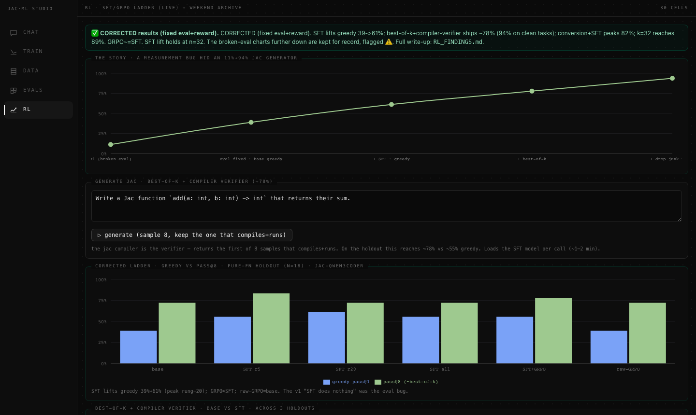

Fine-tuning a language model on your own hardware is mostly not fine-tuning. It's plumbing.
You have a corpus somewhere, a script that turns it into JSONL, another that starts a LoRA run, and a third that scores the adapter against a holdout set. A folder fills with adapters named qwen3-sft-r16-lr2e5-v3 that you won't be able to decode in four days. Eleven terminal tabs, three of which are the same tail -f.
Jac Model Studio (JMS) is the attempt to put all of that behind one window. It's a desktop app for running and managing local model fine-tuning: continued pre-training (CPT), supervised fine-tuning (SFT), preference optimization (DPO), and evaluation.
JMS is written entirely in Jac, which supersets Python and adds object-spatial programming: your data lives on a persistent graph of nodes and edges and you write walkers that traverse it, instead of writing queries against a database you provisioned separately. Jac also compiles to a React client, so the same language writes the server endpoints and the UI.
For JMS that means 34 server modules (.sv.jac) and 65 client components (.cl.jac), around 26,000 lines, in one codebase with no API layer to keep in sync. There's no ORM and no migrations folder. Chats, eval runs, projects, and workspaces are graph nodes hanging off a per-user root, and they persist because that's what the graph does.
Here is the entire create-a-workspace endpoint, from jms/jms_workspaces.sv.jac:125:
"""Add a new JMS workspace, sorted after every existing one. Returns the
refreshed layout dict (same shape as `jms_ui_layout`)."""
def create_jms_workspace(label: str, accent: str) -> dict {
_seed_jms_workspaces();
wid = _next_jms_workspace_id();
acc = accent if accent else _next_jms_accent();
root ++> JmsWorkspace(
wid=wid, label=label, accent=acc, sort_order=len(_all_jms_workspaces())
);
return jms_ui_layout();
}root ++> JmsWorkspace(...) is the write; the matching read further up the file is [root -->][?:JmsWorkspace]. Both roots are the calling user's own root, so nothing in this file knows what a user_id column is and there is no WHERE owner = ? to forget. The client side is one import and one call. JmsWorkspaceSettings.cl.jac:27 says sv import from ..jms_workspaces { create_jms_workspace, ... }, and line 121 says ly = await create_jms_workspace(newLabel.strip(), newAccent);. No fetch wrapper, no route string, no response type declared twice.
The app before this one was FastAPI plus Next.js, and it was deleted. This one runs as a native desktop webview with the API in-process, so there's no browser tab to lose track of.
JMS has two faces. Experiments is the research lab: four workspaces, one per research phase (SFT/DPO, RL/GRPO, CPT, CPT-SFT), each with a left rail of sections for CHAT, DATA, TRAIN, EVALS, CLOUD, and PLAN. Switch workspace and the whole toolset re-points at that experiment's corpus, runs, and results. This is where the messy exploratory work lives.
The JMS surface is the product pipeline: a five-stage rail per project, SOURCES → GENERATE → CURATE → TRAIN → EVAL·CHAT. Point it at documents, generate training rows, hand-curate them, carve a train/holdout split, train, score. Same machinery, arranged for someone who wants to fine-tune a model rather than study fine-tuning.
Underneath both sits jobs.sv.jac, the job engine. Training runs are detached subprocesses rather than threads, with state written to disk as the source of truth, so a run survives a server restart and the app reattaches on boot. A global heavy-job lock guards the GPU, because the machine this was built for has one of them and 48 GB of unified memory. It's a lock file plus a sibling guard file, so a crashed process can't deadlock the slot.
Rented cloud GPUs are wired in too, over the Spheron REST API, with spend guardrails on concurrency, daily budget, and hourly rate.

The design history is the part I'd most want to warn a past version of myself about. At one point the app carried eleven themes and seven layouts, both switchable at runtime. It felt like flexibility. It was a tax: every new component had to look right in eleven palettes, and every layout variant was a second rendering of the same shell that could quietly drift from the first. On 19 July 2026 the whole thing got stripped in a single commit. Six alternate layout renderings gone, ten alternate palettes gone, both switchers deleted, 839 lines removed against 39 added.
Three days later the rebuild started from one file. On 22 July, theme.css was rewritten as the single canonical token source, light and dark, with one orange accent (#EC8242 light, #f4914e dark). A dormant five-swatch theme switcher still sitting in the JMS surface got deleted on the 23rd, along with its data-jms-theme attributes and CSS. Its commit message reads, a little wearily, "No visual change, the machinery was already dormant."
The mesh-gradient frosted-glass look survived about five days. On 28 July it was flattened. Here is the top of the light palette as it stands, jms/theme.css:12:
:root {
/* ===== FLAT palette — LIGHT (default) =====
Flat white, no mesh gradient, no tint. Orange is the ONLY chromatic element:
buttons, highlights, focus, active states. Panels separate from the page by a
hairline border + a soft shadow, not by a fill difference. */
--bg: #ffffff;
--bg-gradient: none;
--surface: #ffffff;
--surface-strong: #ffffff;
--bar: #ffffff;
--overlay: #ffffff;
--text: #0a0a0a;
--text-muted: #6e6e6e;
/* neutral hairlines — --border is the panel rim, --border-alt the divider */
--border: rgba(0,0,0,0.12);
--border-alt: rgba(0,0,0,0.10);
--accent: #EC8242;Five identical #ffffff values in a row is the whole edit. Page, panel, raised panel, top bar, and overlay were five different translucent tints under the glass theme; now they are the same white, and a panel is legible only because of --border and a soft shadow. The dark half is #000000 page against #0e0e0e surface. --blur is still defined a few lines down, with a comment admitting it is now a no-op on panels and survives only for the overlay scrims. Orange had to be paired with a dark-brown foreground instead of white, because white on #EC8242 measures 2.6:1 and fails AA contrast. Eleven themes down to one, and the one is better than any of the eleven were.
Workspaces group projects. The Experiments side seeds one per research phase and treats them as fixed; the JMS side lets you make your own, using the endpoint above.
The assistant is the feature I'm least tired of. assistant.sv.jac is the second-largest server module in the app, and most of its size isn't the chat loop, it's the grounding. Before answering anything it assembles a context bundle from live app state: workspaces, projects, runs, evals, chats, and a cloud digest. Ask it why your last eval failed and it's reading your actual eval nodes.
It talks to local MLX models, Claude, and OpenAI through one picker, with per-user API keys encrypted at rest that no endpoint ever echoes back. Responses stream over SSE, render as markdown with GFM tables, and can carry agentic actions: navigate to a section, start a training run, launch an eval. A local Gemma 3 4B at 4-bit fills the offline slot and cold-loads in about three seconds, so the assistant still works with no key configured and no network.
On 4 August 2026 the app went through a live verification sweep: roughly 20 scripted Playwright sessions driving the running dev server, not a test suite mocking it. Cold contexts with empty localStorage, full console and pageerror capture, computed-style probes, elementFromPoint hit-testing, document.getAnimations() sampling every frame, CDP screencast pixel capture, and real page.mouse clicks instead of element.click() wherever the question was whether a control could be clicked at all.
Scope: 48 experiment screens (4 workspaces by 6 tabs by 2 themes), a project's five pipeline stages in both themes, six overlays dismissed four ways each, four destructive-confirm sites armed and disarmed three ways each, eight cold starts, and a 234-action endurance run per theme.
Results, from the working notes in jms/fixes.md, which is a live document, still uncommitted, and not a published spec:
The sweep also found things, which is the point. Two destructive confirms were never wired to the shared auto-disarm hook, including the irreversible cloud VM terminate, the highest-consequence action in the app and the only one that could sit armed indefinitely. One button is disabled with no stated reason at all. One modal's trigger still sits under its own scrim.
Just as useful is the list of what deliberately wasn't tested. No real model load happened, so the file-descriptor recovery and lock-release paths are unproven end to end. Every Claude-dependent path is verified only in its refusal state. No cloud VM was provisioned. Writing those down as scheduled work beats letting them quietly count as passing.
Everything above exists today. What follows does not.
Cloud dispatch should be a normal way to start a run rather than a separate mode. The pieces are in the repo already: Spheron deploy, a cloud-init bridge that bakes a training command into an instance's runcmd, a supervisor that pulls artifacts back and terminates the VM. What's missing is confidence, because none of it has run against a provisioned instance. The version I want doesn't ask where when you hit train. You pick a config, JMS weighs the job against the local GPU's queue and the price of an H100-hour, and streams the logs into the same panel a local run would use.
Then there's the backend problem, which is four lines long. From jms/metrics.sv.jac:87:
"""Dispatch to a named train-log parser (mlx is the only wired parser today)."""
def parse_train_log_by(parser: str, path: Path) -> dict {
if parser == "mlx" { return parse_train_log(path); }
return parse_train_log(path);
}Both branches go to the same place. The parser argument is decoration on a function that has exactly one implementation, and the docstring says so. JMS grew up on Apple Silicon, and every loss curve it draws is scraped from an mlx_lm trainer log. A run on a rented A100 with PyTorch and DeepSpeed produces a different log shape entirely, and JMS would show you an empty chart. The near fix is a real parser registry behind that signature. The ambitious version is a normalized metric stream that MLX, PyTorch, Axolotl, and Unsloth runs all land in, so runs from different backends can sit on the same axes.
The section registry has the same shape of problem, and its own docstring is more optimistic than its body. jms/components/SectionMount.cl.jac opens on line 1 with:
"""Dynamic section registry — maps component names to mounted section bodies.
New section types register here once; AppShell imports SectionMount instead of
hard-coding a component→import map in the shell.
"""Nothing registers anything. Twenty lines below that, starting at line 24:
if component == "Chat" {
return <Chat workspace={workspace} defaultModel={defaultModel} />;
}
if component == "Data" { return <Data />; }
if component == "RlData" { return <RlData />; }
if component == "CptData" { return <CptData />; }
if component == "CptSftData" { return <CptSftData />; }
if component == "CptSftPlan" { return <CptSftPlan />; }
if component == "Train" { return <Train active={active} />; }Six more branches follow. Each string in that chain has to match an entry in the thirteen-item SECTION_TYPES glob at jms/workspace.sv.jac:596, which is what the workspace editor lists. Adding a section means editing both, and the failure mode when you edit one is a panel reading UNKNOWN SECTION. That's fine at thirteen and miserable at fifty. What the docstring describes is what should happen: a component declares its own section type, and the workspace editor picks it up because it's on disk. Further out, that same seam is how someone else's eval harness gets mounted in your workspace without a pull request against this file.
Multi-user is the last piece, and it's half-built already. Identity and artifacts are multi-tenant today, with graph data on per-user roots and run directories namespaced per user. But the app runs in local single-user mode day to day, the workspace data-config is one TOML for the whole install, and the heavy-GPU lock is global across users on purpose. A real shared instance needs per-user workspace config, a queue instead of a mutex, and a fair-share policy for whose turn it is on the box.
The version of this I actually want is a lab where you can open a colleague's run. Not a screenshot of their loss curve in Slack, not their config pasted into a message with the learning rate already wrong. The run, on the same axes as yours, with the corpus it was trained on one click away, because both are nodes on a graph that recorded them while nobody was thinking about it. Fork it, change one thing, put it in the queue behind whatever is currently on the box. The reason I keep building this instead of going back to shell scripts is that the graph makes that nearly free, and I have spent enough of my life reconstructing what a run was from a folder name.
That's the ambition. Today it's a single-user desktop app with a clean console and a 340 ms cold start, which, having read the audit, I'll take as a foundation.